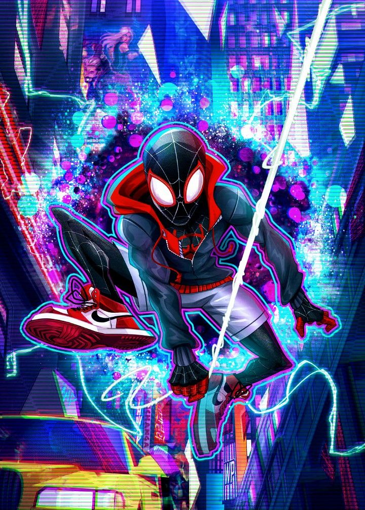

About Miles
Miles was bitten by a genetically enhanced spider, and becomes Spiderman after the death of Peter Parker
Miles as Spiderman
Miles Characteristics
- He can go invisible
- He has a venom blast
- He befriends Gwen Stacey
Miles' Friends
Miles has some awsome friends. I think his best friend is Ganke. His roomate from high school. Click on links below to read more about them: